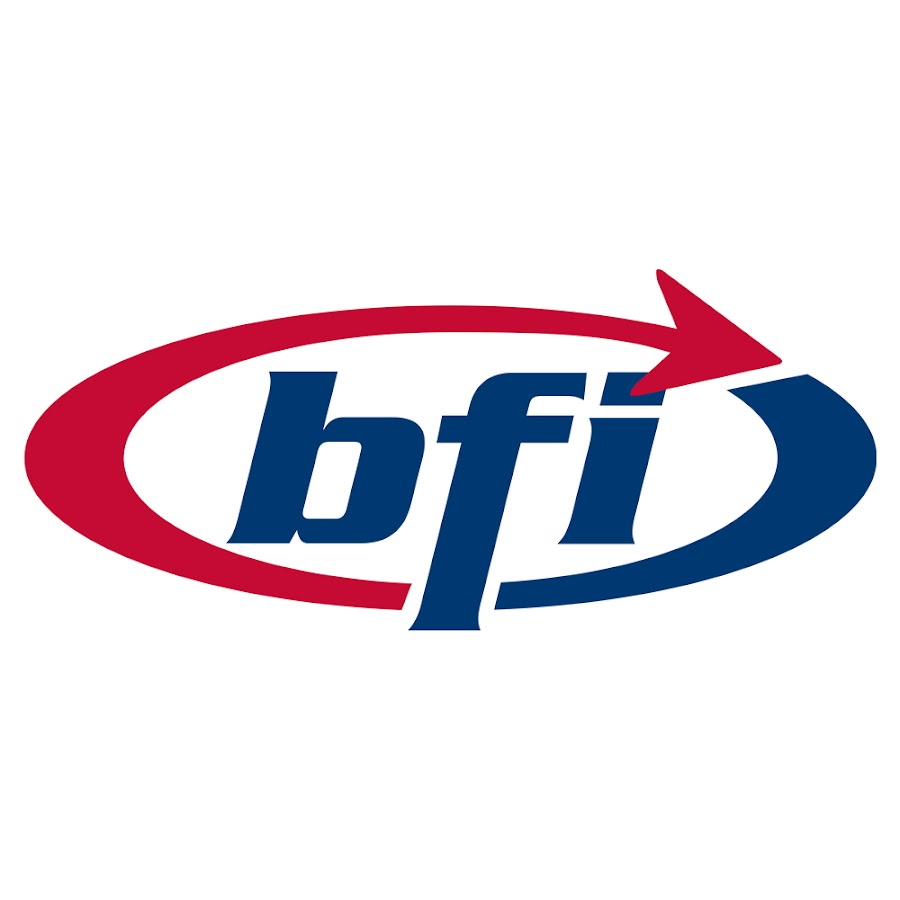
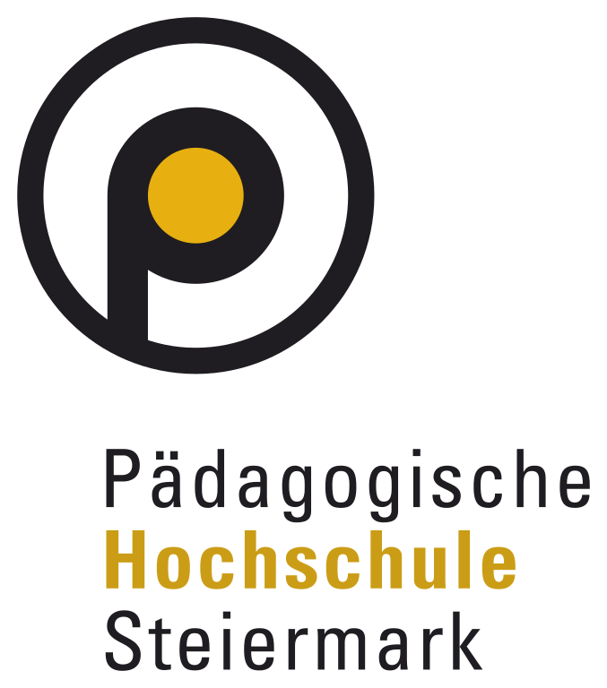

Références
Domaines d’intervention et expérience
De longues années d’expérience nationale et internationale sur des questions de gestion, de finance et d’informatique.
Domaines d’expertise
Contrôle de gestion et pilotage financier
Accompagnement en planification, pilotage, reporting et développement économique.
Internationalisation et accompagnement de la croissance
Soutien face aux défis internationaux, à l’expansion et au développement organisationnel.
Conseil en processus et informatique autour de l’ERP
Alliance des exigences de gestion et de solutions informatiques conviviales et efficaces.
Formation, conférences et transfert de connaissances
Missions d’enseignement, séminaires et transmission pragmatique de contenus économiques complexes.
Entreprises et institutions
Une sélection de collaborations passées
Formation et hautes écoles

BFI Steiermark FH Campus 02
FH Campus 02 FH Hamburg
FH Hamburg- Land- und forstwirtschaftliche Ausbildungsstätte Steiermark

Pädagogische Hochschule Steiermark Universität Graz
Universität Graz WIFI Steiermark
WIFI Steiermark
Services et santé
 Kurzentrum Althofen GmbH
Kurzentrum Althofen GmbH- Saubermacher Dienstleistungs AG
Autres entreprises
 ams - austriamicrosystems AG
ams - austriamicrosystems AG ATB Austria Antriebstechnik AG
ATB Austria Antriebstechnik AG AVL List GmbH
AVL List GmbH Efkon AG
Efkon AG Frauenthal Holding AG
Frauenthal Holding AG- Meadwestvaco GmbH
 Security KAG
Security KAG VAE GmbH
VAE GmbH voestalpine AG
voestalpine AG- ZAT GmbH
- et bien d’autres
Entretien d’orientation
Une question dont vous souhaitez discuter ?
Lors d’un entretien d’orientation sans engagement, nous clarifions si et comment je peux vous accompagner.